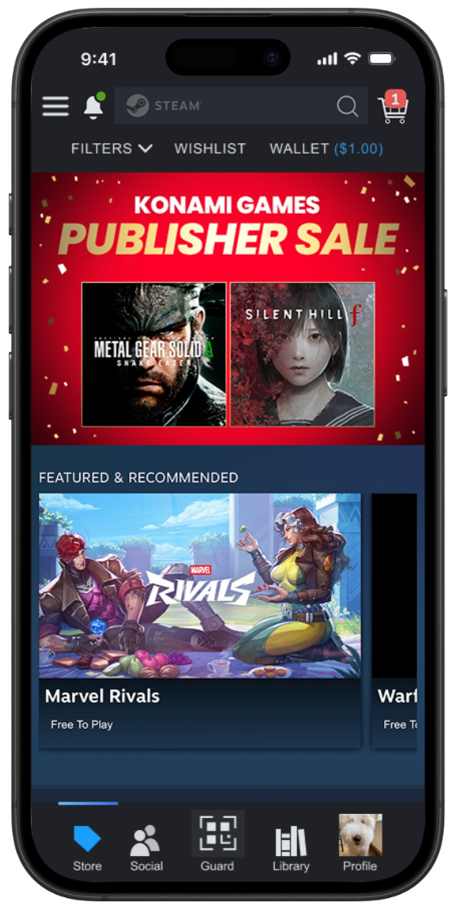
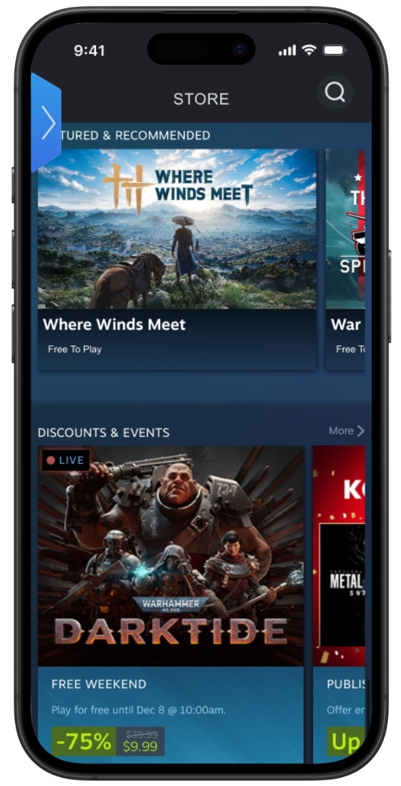
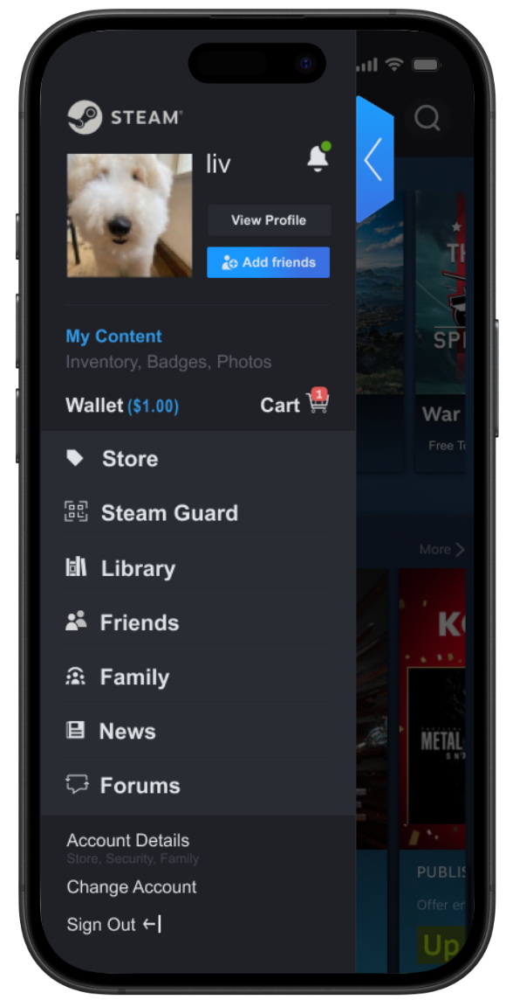
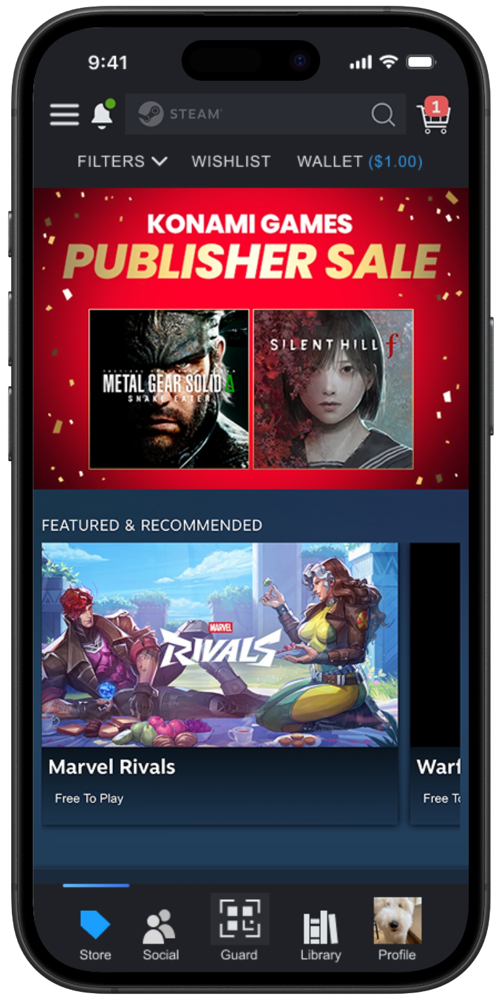
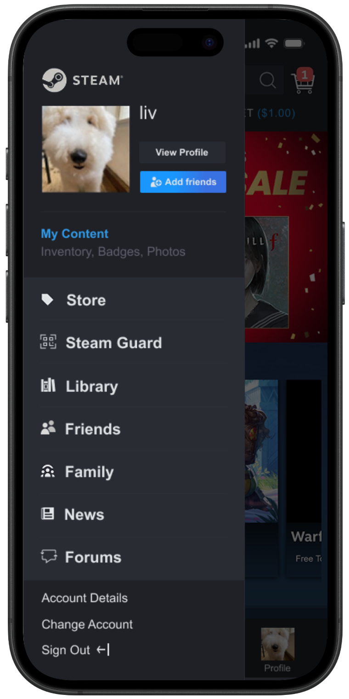
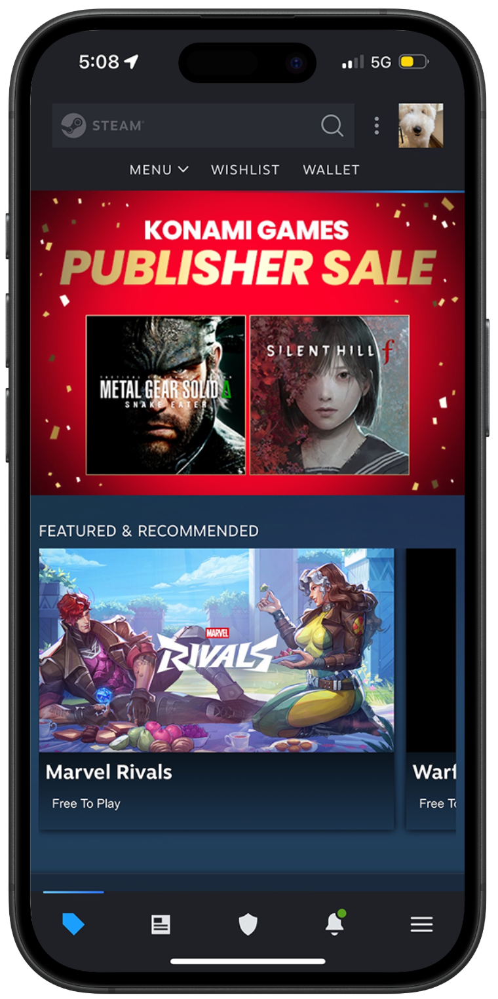
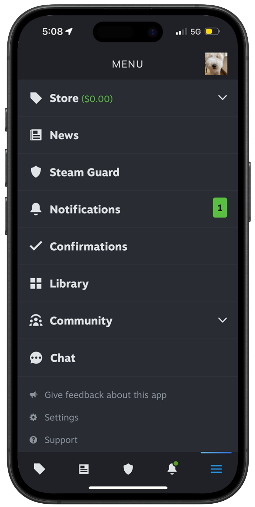
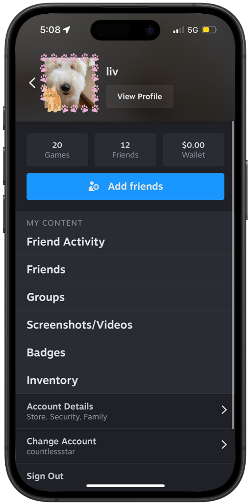

OVERVIEW
3.41 Seconds Faster
Working with a team of two others, we redesigned the Steam mobile app to fix a navigation system that often felt like a guessing game for users. We replaced Steam's disorganized layout with a hybrid design that pairs a familiar bottom navigation bar for daily tasks with a centralized profile hub for deeper account features like Steam Families.
By following standard mobile design rules, we were able to cut down on mental effort by 3.21 seconds and make it much faster for users to find their friends and games.
PROBLEM STATEMENT
Gaming Powerhouse on Desktop. Puzzle on Mobile.
The Steam mobile app suffers from a significant disconnect between its information architecture and standard mobile user expectations. It struggles to balance being a storefront, a social platform, and a news hub, resulting in a "guessing game" for users. High-value features are often buried under vague labels like "Community," leading to low discoverability and high cognitive load.
RESEARCH AND PAIN POINTS
Our Insights
Through user testing, we identified several key pain points that impacted how users understood and navigated the experience:
- Low Discoverability: Users often relied on incorrect assumptions about where features lived. For example, many looked for “Family Management” within the hamburger menu instead of the profile section, suggesting a mismatch between mental models and system structure.
- Poor Information Breadcrumbs: Labels like “Community” led users down unexpected paths, and in turn, creating confusion and making it difficult to have a clear sense of navigation flow.
- Breaking Platform Standards: Key tools, such as search filters, were hidden inside the search bar rather than placed alongside it, breaking expected patterns and causing unnecessary confusiong.
- High Cognitive Load: New users in particular felt overwhelmed by the density of information. Missing visual cues like profile images or clear feedback states made the interface feel less responsive and harder to interpret.
THE STRATEGY
A/B Testing Two Directions
We developed two distinct prototypes to test which model resonated most with users:
Prototype A (The Conventional)
A standard bottom navigation bar prioritizing familiarity and one-tap access.

Prototype B (The All-In-One)
A centralized hub designed to reduce information scattering and consolidate features into a single entry point.


THE SOLUTION
The Turning Point & Final Design Choices
Our A/B testing revealed a clear trade-off: Prototype A excelled at high-frequency tasks (Store and Library actions resolved within 6–10 seconds), while Prototype B solved the buried feature problem by organizing complex tools inside a functional dashboard. Interviewees favored Prototype A's overall simplicity but preferred Prototype B's item taxonomy.
Ultimately, we chose to combine the strongest elements of both layouts:
- Intuitiveness: High-frequency social and shopping actions (Library, Friends, Store) are instantly accessible via a standard bottom bar to leverage established mental models.
- Efficiency: Complex account management (Steam Families, Settings) is consolidated into a streamlined profile hub, eliminating the disorganized "guessing game" of the original app.
- Clarity: We addressed redundancy by renaming ambiguous tags like changing "Community" to "Forums" and rearranging menus from most-used to least-used.


LESSONS LEARNED
Reflection
This project really put into perspective how important it is to distinguish between mobile and desktop experiences; you can't simply move desktop features into a mobile layout and expect a smooth user journey. It showed my team and me that even the smallest details, like renaming an ambiguous "Community" tag to "Forums" can help users more than we realized.
We saw firsthand that when these details are overlooked, it creates a massive "guessing game" for tasks that should be simple. It taught me that even if an issue seems minuscule, it's still important to account for it, because those small points are exactly what cause users to give up entirely.
INTERACTIVE PROTOTYPE
High-Fidelity Interaction Stream
FOR THE CURIOUS
Visual Comparison Matrices
The graphics below trace a side-by-side visual mapping between our interactive layout choices and the original ecosystem interface elements.

Vague icons and buried menus were replaced with a labeled bottom navigation bar and a centralized profile hub, refocusing the experience around the shop, the app's primary use.


From two separate menus to a single, centralized hub, making content easier to find.